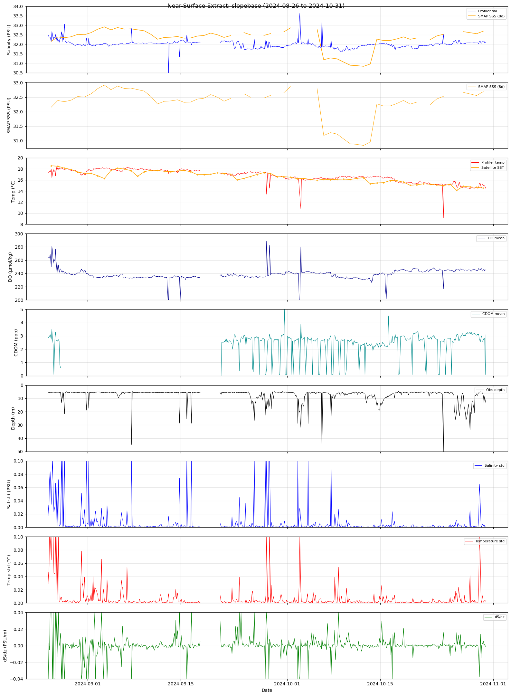

Columbia River Plume#
Initial objective: Examine NASA Sea Surface Salinity products for a (particularly summer) potential plume incursion.
The locations of the profilers:
Site |
Latitude |
Longitude |
Depth |
Distance offshore |
|---|---|---|---|---|
Offshore |
44.37N |
124.95W |
600m |
65km |
Slope Base |
44.53N |
125.39W |
2900m |
100km |
Axial Base |
45.83N |
130.01W |
2600m |
350km |
%run ../plume/surface_extract.py
Scanning pp06 for slopebase (2015–2025)...
Found 22102 unique GPIs with at least one sensor file.
Processed 500 profiles...
Processed 1000 profiles...
Processed 1500 profiles...
---------------------------------------------------------------------------
KeyboardInterrupt Traceback (most recent call last)
File ~/argosy/plume/surface_extract.py:188
185 continue
187 try:
--> 188 ds2 = xr.open_dataset(sensor_files[sensor])
189 s_data = ds2[sensor].values
190 s_depth = np.abs(ds2['depth'].values)
File ~/miniconda3/envs/argosy/lib/python3.11/site-packages/xarray/backends/api.py:566, in open_dataset(filename_or_obj, engine, chunks, cache, decode_cf, mask_and_scale, decode_times, decode_timedelta, use_cftime, concat_characters, decode_coords, drop_variables, inline_array, chunked_array_type, from_array_kwargs, backend_kwargs, **kwargs)
554 decoders = _resolve_decoders_kwargs(
555 decode_cf,
556 open_backend_dataset_parameters=backend.open_dataset_parameters,
(...)
562 decode_coords=decode_coords,
563 )
565 overwrite_encoded_chunks = kwargs.pop("overwrite_encoded_chunks", None)
--> 566 backend_ds = backend.open_dataset(
567 filename_or_obj,
568 drop_variables=drop_variables,
569 **decoders,
570 **kwargs,
571 )
572 ds = _dataset_from_backend_dataset(
573 backend_ds,
574 filename_or_obj,
(...)
584 **kwargs,
585 )
586 return ds
File ~/miniconda3/envs/argosy/lib/python3.11/site-packages/xarray/backends/netCDF4_.py:604, in NetCDF4BackendEntrypoint.open_dataset(self, filename_or_obj, mask_and_scale, decode_times, concat_characters, decode_coords, drop_variables, use_cftime, decode_timedelta, group, mode, format, clobber, diskless, persist, lock, autoclose)
602 store_entrypoint = StoreBackendEntrypoint()
603 with close_on_error(store):
--> 604 ds = store_entrypoint.open_dataset(
605 store,
606 mask_and_scale=mask_and_scale,
607 decode_times=decode_times,
608 concat_characters=concat_characters,
609 decode_coords=decode_coords,
610 drop_variables=drop_variables,
611 use_cftime=use_cftime,
612 decode_timedelta=decode_timedelta,
613 )
614 return ds
File ~/miniconda3/envs/argosy/lib/python3.11/site-packages/xarray/backends/store.py:58, in StoreBackendEntrypoint.open_dataset(self, filename_or_obj, mask_and_scale, decode_times, concat_characters, decode_coords, drop_variables, use_cftime, decode_timedelta)
44 encoding = filename_or_obj.get_encoding()
46 vars, attrs, coord_names = conventions.decode_cf_variables(
47 vars,
48 attrs,
(...)
55 decode_timedelta=decode_timedelta,
56 )
---> 58 ds = Dataset(vars, attrs=attrs)
59 ds = ds.set_coords(coord_names.intersection(vars))
60 ds.set_close(filename_or_obj.close)
File ~/miniconda3/envs/argosy/lib/python3.11/site-packages/xarray/core/dataset.py:652, in Dataset.__init__(self, data_vars, coords, attrs)
649 if isinstance(coords, Dataset):
650 coords = coords._variables
--> 652 variables, coord_names, dims, indexes, _ = merge_data_and_coords(
653 data_vars, coords, compat="broadcast_equals"
654 )
656 self._attrs = dict(attrs) if attrs is not None else None
657 self._close = None
File ~/miniconda3/envs/argosy/lib/python3.11/site-packages/xarray/core/merge.py:569, in merge_data_and_coords(data_vars, coords, compat, join)
567 objects = [data_vars, coords]
568 explicit_coords = coords.keys()
--> 569 return merge_core(
570 objects,
571 compat,
572 join,
573 explicit_coords=explicit_coords,
574 indexes=Indexes(indexes, coords),
575 )
File ~/miniconda3/envs/argosy/lib/python3.11/site-packages/xarray/core/merge.py:755, in merge_core(objects, compat, join, combine_attrs, priority_arg, explicit_coords, indexes, fill_value)
751 coerced = coerce_pandas_values(objects)
752 aligned = deep_align(
753 coerced, join=join, copy=False, indexes=indexes, fill_value=fill_value
754 )
--> 755 collected = collect_variables_and_indexes(aligned, indexes=indexes)
756 prioritized = _get_priority_vars_and_indexes(aligned, priority_arg, compat=compat)
757 variables, out_indexes = merge_collected(
758 collected, prioritized, compat=compat, combine_attrs=combine_attrs
759 )
File ~/miniconda3/envs/argosy/lib/python3.11/site-packages/xarray/core/merge.py:354, in collect_variables_and_indexes(list_of_mappings, indexes)
351 indexes_.pop(name, None)
352 append_all(coords_, indexes_)
--> 354 variable = as_variable(variable, name=name)
355 if name in indexes:
356 append(name, variable, indexes[name])
File ~/miniconda3/envs/argosy/lib/python3.11/site-packages/xarray/core/variable.py:169, in as_variable(obj, name)
163 if obj.ndim != 1:
164 raise MissingDimensionsError(
165 f"{name!r} has more than 1-dimension and the same name as one of its "
166 f"dimensions {obj.dims!r}. xarray disallows such variables because they "
167 "conflict with the coordinates used to label dimensions."
168 )
--> 169 obj = obj.to_index_variable()
171 return obj
File ~/miniconda3/envs/argosy/lib/python3.11/site-packages/xarray/core/variable.py:630, in Variable.to_index_variable(self)
628 def to_index_variable(self) -> IndexVariable:
629 """Return this variable as an xarray.IndexVariable"""
--> 630 return IndexVariable(
631 self._dims, self._data, self._attrs, encoding=self._encoding, fastpath=True
632 )
File ~/miniconda3/envs/argosy/lib/python3.11/site-packages/xarray/core/variable.py:2910, in IndexVariable.__init__(self, dims, data, attrs, encoding, fastpath)
2908 # Unlike in Variable, always eagerly load values into memory
2909 if not isinstance(self._data, PandasIndexingAdapter):
-> 2910 self._data = PandasIndexingAdapter(self._data)
File ~/miniconda3/envs/argosy/lib/python3.11/site-packages/xarray/core/indexing.py:1478, in PandasIndexingAdapter.__init__(self, array, dtype)
1475 def __init__(self, array: pd.Index, dtype: DTypeLike = None):
1476 from xarray.core.indexes import safe_cast_to_index
-> 1478 self.array = safe_cast_to_index(array)
1480 if dtype is None:
1481 self._dtype = get_valid_numpy_dtype(array)
File ~/miniconda3/envs/argosy/lib/python3.11/site-packages/xarray/core/indexes.py:190, in safe_cast_to_index(array)
180 emit_user_level_warning(
181 (
182 "`pandas.Index` does not support the `float16` dtype."
(...)
186 category=DeprecationWarning,
187 )
188 kwargs["dtype"] = "float64"
--> 190 index = pd.Index(np.asarray(array), **kwargs)
192 return _maybe_cast_to_cftimeindex(index)
File ~/miniconda3/envs/argosy/lib/python3.11/site-packages/xarray/core/indexing.py:471, in ExplicitlyIndexedNDArrayMixin.__array__(self, dtype)
468 def __array__(self, dtype: np.typing.DTypeLike = None) -> np.ndarray:
469 # This is necessary because we apply the indexing key in self.get_duck_array()
470 # Note this is the base class for all lazy indexing classes
--> 471 return np.asarray(self.get_duck_array(), dtype=dtype)
File ~/miniconda3/envs/argosy/lib/python3.11/site-packages/xarray/core/indexing.py:557, in LazilyIndexedArray.get_duck_array(self)
552 # self.array[self.key] is now a numpy array when
553 # self.array is a BackendArray subclass
554 # and self.key is BasicIndexer((slice(None, None, None),))
555 # so we need the explicit check for ExplicitlyIndexed
556 if isinstance(array, ExplicitlyIndexed):
--> 557 array = array.get_duck_array()
558 return _wrap_numpy_scalars(array)
File ~/miniconda3/envs/argosy/lib/python3.11/site-packages/xarray/coding/variables.py:74, in _ElementwiseFunctionArray.get_duck_array(self)
73 def get_duck_array(self):
---> 74 return self.func(self.array.get_duck_array())
File ~/miniconda3/envs/argosy/lib/python3.11/site-packages/xarray/coding/times.py:289, in decode_cf_datetime(num_dates, units, calendar, use_cftime)
287 if use_cftime is None:
288 try:
--> 289 dates = _decode_datetime_with_pandas(flat_num_dates, units, calendar)
290 except (KeyError, OutOfBoundsDatetime, OutOfBoundsTimedelta, OverflowError):
291 dates = _decode_datetime_with_cftime(
292 flat_num_dates.astype(float), units, calendar
293 )
File ~/miniconda3/envs/argosy/lib/python3.11/site-packages/xarray/coding/times.py:230, in _decode_datetime_with_pandas(flat_num_dates, units, calendar)
226 delta = _netcdf_to_numpy_timeunit(delta)
227 try:
228 # TODO: the strict enforcement of nanosecond precision Timestamps can be
229 # relaxed when addressing GitHub issue #7493.
--> 230 ref_date = nanosecond_precision_timestamp(ref_date)
231 except ValueError:
232 # ValueError is raised by pd.Timestamp for non-ISO timestamp
233 # strings, in which case we fall back to using cftime
234 raise OutOfBoundsDatetime
File ~/miniconda3/envs/argosy/lib/python3.11/site-packages/xarray/core/pdcompat.py:104, in nanosecond_precision_timestamp(*args, **kwargs)
98 """Return a nanosecond-precision Timestamp object.
99
100 Note this function should no longer be needed after addressing GitHub issue
101 #7493.
102 """
103 if Version(pd.__version__) >= Version("2.0.0"):
--> 104 return pd.Timestamp(*args, **kwargs).as_unit("ns")
105 else:
106 return pd.Timestamp(*args, **kwargs)
KeyboardInterrupt:
%run ../plume/fetch_sst.py
No existing SST file — fetching fresh.
Fetching SST from NOAA CoastWatch ERDDAP (2015–2026)...
Site: slopebase (44.53N, -125.39W)
2015: 365 records
2016: 366 records
2017: 365 records
2018: 365 records
2019: 365 records
2020: 366 records
2021: 365 records
2022: 365 records
2023: 365 records
2024: 366 records
2025: 365 records
2026: 213 records
New fetch: 4231 total records
Range: 8.63–20.25 °C
Saved: /home/rob/ooi/metadata/satellite_sst_slopebase.csv
4231 records, columns: ['timestamp', 'sst_degC', 'site']
Time: 2015-01-01 12:00:00+00:00 to 2026-08-01 12:00:00+00:00
%run ../plume/fetch_sss.py
No existing SSS file — fetching fresh.
Fetching SSS from NOAA CoastWatch ERDDAP (2015–2026)...
Site: slopebase (44.53N, -125.39W)
2015: 157 records
2016: 210 records
2017: 219 records
2018: 195 records
2019: 179 records
2020: 189 records
2021: 212 records
2022: 149 records
2023: FAILED (HTTP Error 502: Proxy Error)
2023: no data
2024: 313 records
2025: FAILED (HTTP Error 502: Proxy Error)
2025: no data
2026: 201 records
New fetch: 2024 total records
Range: 20.37–43.23 PSU
Saved: /home/rob/ooi/metadata/satellite_sss_slopebase.csv
2024 records, columns: ['timestamp', 'sss_psu', 'site', 'sss_8day']
Time: 2015-04-02 12:00:00+00:00 to 2026-08-01 12:00:00+00:00
SSS 8-day range: 30.38–35.20 PSU
%run ~/argosy/plume/surface_plot.py
Loaded 20447 records from surface_extract_slopebase.csv
Time range: 2015-07-09 17:15:27.409630208 to 2025-12-31 21:48:09.185918464
Loaded 2024 satellite SSS records
Loaded 4231 satellite SST records
Plotting 568 records from 2024-08-26 to 2024-10-31
Saved: /home/rob/ooi/visualizations/surface_extract_slopebase_20240826_20241031.png

%run ../plume/smap_download.py
Requesting satellite data from NOAA CoastWatch ERDDAP...
Site: slopebase (44.53N, -125.39W)
Time: 2015-04-01 to 2026-07-01
Fetching: noaacwSMAPsssDaily...
URL: https://coastwatch.noaa.gov/erddap/griddap/noaacwSMAPsssDaily.csv?sss[(2015-04-01T00:00:00Z):1:(2015-12-31T00:00:00Z)][(0)][(44.53)][(-125.39)]...
2015: 266 records
Fetching: noaacwSMAPsssDaily...
URL: https://coastwatch.noaa.gov/erddap/griddap/noaacwSMAPsssDaily.csv?sss[(2016-01-01T00:00:00Z):1:(2016-12-31T00:00:00Z)][(0)][(44.53)][(-125.39)]...
2016: 363 records
Fetching: noaacwSMAPsssDaily...
URL: https://coastwatch.noaa.gov/erddap/griddap/noaacwSMAPsssDaily.csv?sss[(2017-01-01T00:00:00Z):1:(2017-12-31T00:00:00Z)][(0)][(44.53)][(-125.39)]...
2017: 365 records
Fetching: noaacwSMAPsssDaily...
URL: https://coastwatch.noaa.gov/erddap/griddap/noaacwSMAPsssDaily.csv?sss[(2018-01-01T00:00:00Z):1:(2018-12-31T00:00:00Z)][(0)][(44.53)][(-125.39)]...
2018: 363 records
Fetching: noaacwSMAPsssDaily...
URL: https://coastwatch.noaa.gov/erddap/griddap/noaacwSMAPsssDaily.csv?sss[(2019-01-01T00:00:00Z):1:(2019-12-31T00:00:00Z)][(0)][(44.53)][(-125.39)]...
2019: 312 records
Fetching: noaacwSMAPsssDaily...
URL: https://coastwatch.noaa.gov/erddap/griddap/noaacwSMAPsssDaily.csv?sss[(2020-01-01T00:00:00Z):1:(2020-12-31T00:00:00Z)][(0)][(44.53)][(-125.39)]...
2020: 333 records
Fetching: noaacwSMAPsssDaily...
URL: https://coastwatch.noaa.gov/erddap/griddap/noaacwSMAPsssDaily.csv?sss[(2021-01-01T00:00:00Z):1:(2021-12-31T00:00:00Z)][(0)][(44.53)][(-125.39)]...
2021: 351 records
Fetching: noaacwSMAPsssDaily...
URL: https://coastwatch.noaa.gov/erddap/griddap/noaacwSMAPsssDaily.csv?sss[(2022-01-01T00:00:00Z):1:(2022-12-31T00:00:00Z)][(0)][(44.53)][(-125.39)]...
2022: 281 records
Fetching: noaacwSMAPsssDaily...
URL: https://coastwatch.noaa.gov/erddap/griddap/noaacwSMAPsssDaily.csv?sss[(2023-01-01T00:00:00Z):1:(2023-12-31T00:00:00Z)][(0)][(44.53)][(-125.39)]...
2023: failed (HTTP Error 502: Proxy Error)
Fetching: noaacwSMAPsssDaily...
URL: https://coastwatch.noaa.gov/erddap/griddap/noaacwSMAPsssDaily.csv?sss[(2024-01-01T00:00:00Z):1:(2024-12-31T00:00:00Z)][(0)][(44.53)][(-125.39)]...
2024: 325 records
Fetching: noaacwSMAPsssDaily...
URL: https://coastwatch.noaa.gov/erddap/griddap/noaacwSMAPsssDaily.csv?sss[(2025-01-01T00:00:00Z):1:(2025-12-31T00:00:00Z)][(0)][(44.53)][(-125.39)]...
2025: 353 records
Fetching: noaacwSMAPsssDaily...
URL: https://coastwatch.noaa.gov/erddap/griddap/noaacwSMAPsssDaily.csv?sss[(2026-01-01T00:00:00Z):1:(2026-12-31T00:00:00Z)][(0)][(44.53)][(-125.39)]...
2026: failed (HTTP Error 404: )
SSS total: 2161 measurements, range 20.37–39.30 PSU
SSS: 2161 measurements, range 20.37–39.30 PSU
Fetching: noaacrwsstDaily...
URL: https://coastwatch.noaa.gov/erddap/griddap/noaacrwsstDaily.csv?analysed_sst[(2015-04-01T00:00:00Z):1:(2015-12-31T00:00:00Z)][(44.53)][(-125.39)]...
2015: 275 records
Fetching: noaacrwsstDaily...
URL: https://coastwatch.noaa.gov/erddap/griddap/noaacrwsstDaily.csv?analysed_sst[(2016-01-01T00:00:00Z):1:(2016-12-31T00:00:00Z)][(44.53)][(-125.39)]...
2016: 366 records
Fetching: noaacrwsstDaily...
URL: https://coastwatch.noaa.gov/erddap/griddap/noaacrwsstDaily.csv?analysed_sst[(2017-01-01T00:00:00Z):1:(2017-12-31T00:00:00Z)][(44.53)][(-125.39)]...
2017: failed (HTTP Error 502: Proxy Error)
Fetching: noaacrwsstDaily...
URL: https://coastwatch.noaa.gov/erddap/griddap/noaacrwsstDaily.csv?analysed_sst[(2018-01-01T00:00:00Z):1:(2018-12-31T00:00:00Z)][(44.53)][(-125.39)]...
2018: 365 records
Fetching: noaacrwsstDaily...
URL: https://coastwatch.noaa.gov/erddap/griddap/noaacrwsstDaily.csv?analysed_sst[(2019-01-01T00:00:00Z):1:(2019-12-31T00:00:00Z)][(44.53)][(-125.39)]...
2019: failed (HTTP Error 502: Proxy Error)
Fetching: noaacrwsstDaily...
URL: https://coastwatch.noaa.gov/erddap/griddap/noaacrwsstDaily.csv?analysed_sst[(2020-01-01T00:00:00Z):1:(2020-12-31T00:00:00Z)][(44.53)][(-125.39)]...
2020: failed (HTTP Error 502: Proxy Error)
Fetching: noaacrwsstDaily...
URL: https://coastwatch.noaa.gov/erddap/griddap/noaacrwsstDaily.csv?analysed_sst[(2021-01-01T00:00:00Z):1:(2021-12-31T00:00:00Z)][(44.53)][(-125.39)]...
2021: failed (HTTP Error 502: Proxy Error)
Fetching: noaacrwsstDaily...
URL: https://coastwatch.noaa.gov/erddap/griddap/noaacrwsstDaily.csv?analysed_sst[(2022-01-01T00:00:00Z):1:(2022-12-31T00:00:00Z)][(44.53)][(-125.39)]...
2022: 365 records
Fetching: noaacrwsstDaily...
URL: https://coastwatch.noaa.gov/erddap/griddap/noaacrwsstDaily.csv?analysed_sst[(2023-01-01T00:00:00Z):1:(2023-12-31T00:00:00Z)][(44.53)][(-125.39)]...
2023: 365 records
Fetching: noaacrwsstDaily...
URL: https://coastwatch.noaa.gov/erddap/griddap/noaacrwsstDaily.csv?analysed_sst[(2024-01-01T00:00:00Z):1:(2024-12-31T00:00:00Z)][(44.53)][(-125.39)]...
2024: failed (HTTP Error 502: Proxy Error)
Fetching: noaacrwsstDaily...
URL: https://coastwatch.noaa.gov/erddap/griddap/noaacrwsstDaily.csv?analysed_sst[(2025-01-01T00:00:00Z):1:(2025-12-31T00:00:00Z)][(44.53)][(-125.39)]...
2025: failed (HTTP Error 502: Proxy Error)
Fetching: noaacrwsstDaily...
URL: https://coastwatch.noaa.gov/erddap/griddap/noaacrwsstDaily.csv?analysed_sst[(2026-01-01T00:00:00Z):1:(2026-12-31T00:00:00Z)][(44.53)][(-125.39)]...
2026: failed (HTTP Error 404: )
SST total: 1736 measurements, range 8.6–20.2 °C
Saved: /home/rob/ooi/metadata/smap_sss_slopebase.csv
3186 rows, columns: ['timestamp', 'sss_psu', 'sst_degC', 'site']
Time range: 2015-04-01 00:00:00 to 2025-12-31 00:00:00